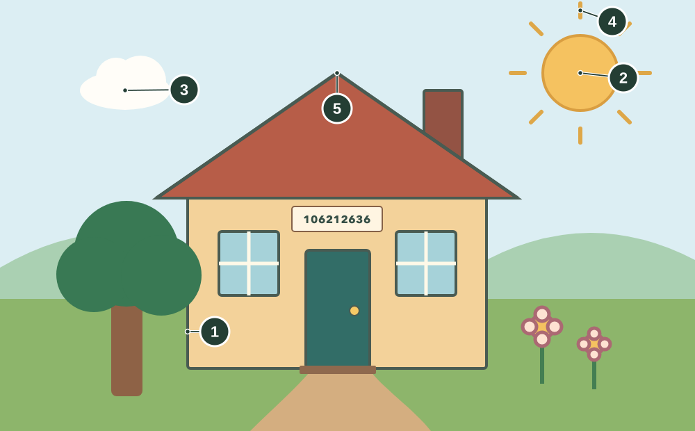
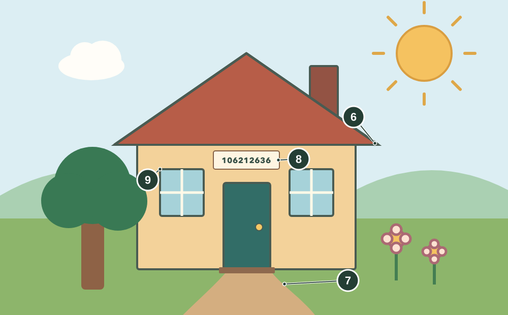
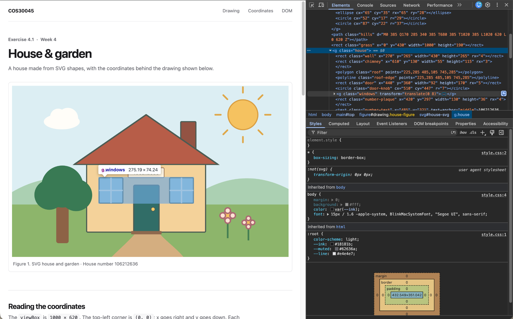

Exercise 4.1 · Week 4
House & garden
A house made from SVG shapes, with the coordinates behind the drawing shown below.
Reading the coordinates
The viewBox is 1000 × 620. The top-left corner is (0, 0); x goes right and y goes down. Each number on the images matches a row below.

- Wall · rect
x="270" y="265"is its top-left corner;width="430" height="265"gives its size. - Sun · circle
cx="835" cy="105"puts the centre here.r="54"is the radius. - Cloud · ellipseThe cloud group moves by
translate(115 95). Its ellipse centre(65, 35)appears at(180, 130)in the whole drawing. - Sun ray · lineThe top ray goes from
(835, 25)to(835, 5); these are its two ends. - Roof · polygon
points="225,285 485,105 745,285"lists left corner, roof peak, then right corner. The shape closes itself.

- Roof outline · polylineIt connects the same three roof points.
fill: noneleaves just the line visible. - Garden path · path
M450 530starts at the door;Cdraws curved sides andZcloses the shape. - House number · text
x="485" y="321"positions the text.text-anchor="middle"centres 106212636 on the plaque. - Two windows · gBoth use the
.windowstyle. Their groups move to(315, 325)and(570, 325); the outer group moves both down another8units.
SVG in the DOM
